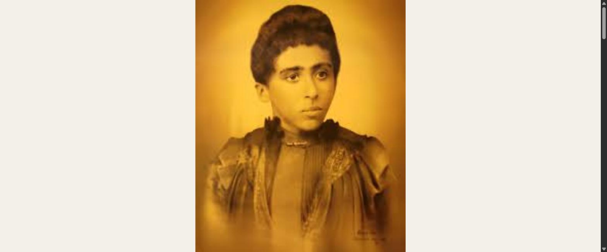
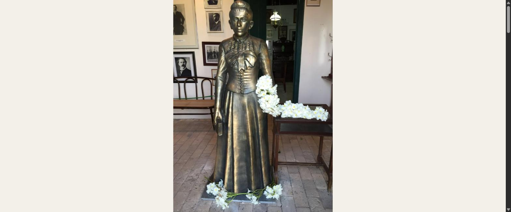
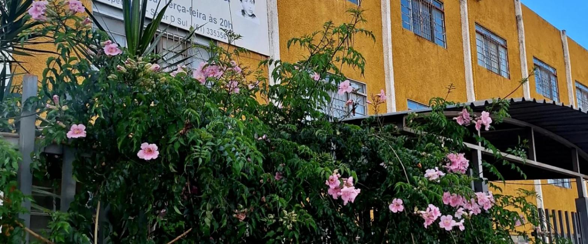

Ela ficou órfã
O Lar Maria de Nazaré acolhe quem chegou ao mundo sem chão embaixo dos pés.
Macaíba, Rio Grande do Norte, 12 de setembro de 1876 — Natal, 7 de fevereiro de 1901. Vinte e quatro anos de vida e um único livro publicado. Foi o bastante.
A biografia de Auta de Souza é uma sequência de perdas. A mãe morreu antes que ela completasse três anos; o pai, aos cinco. Foi criada pelos avós. Aos dez, viu o irmão mais novo morrer queimado diante dela. Aos catorze, adoeceu de tuberculose — a doença que a levaria dez anos depois.
Doente, continuou dando aulas de religião às crianças da vizinhança. Escreveu quase toda a sua obra entre uma febre e outra. Em 1900, publicou Horto — o título é o de um jardim cultivado, não o de um campo selvagem. O prefácio é de Olavo Bilac.
Francisco Palma a chamou de cotovia mística das rimas. Câmara Cascudo a considerou a maior poeta mística que o Brasil produziu. Morreu no ano seguinte à publicação.
Meio século depois, o espiritismo brasileiro adotaria seu nome como bandeira de caridade. Esta casa adotou sua vida como método: responder à dor com trabalho.

O único retrato conhecido de Auta de Souza, feito em Natal na última década do século XIX.
Deixa que eu viva assim: sozinha e triste,
plantando rosas no jardim da vida…
O Horto foi publicado em 1900, em Natal. Auta havia pensado em chamá-lo Dálias — a flor que floresce sem chamar atenção. É dessa flor que vem o vinho desta identidade visual, e é dela que veio, sem que ninguém combinasse, a trepadeira florida que cobre a fachada da casa.



Não foi planejado assim. Foi descoberto depois — e virou a espinha dorsal do que fazemos.
O Lar Maria de Nazaré acolhe quem chegou ao mundo sem chão embaixo dos pés.
O Passos do Saber e a evangelização infantil continuam a aula que ela dava doente.
As cestas básicas e os enxovais chegam onde ela sabia que a fome chega primeiro.
A Editora e o Instituto de Divulgação existem para que a palavra não dependa de uma vida curta.
Meu Deus! como é bonito um coração que sabe amar, sofrendo e perdoando…Auta de Souza · Horto, 1900